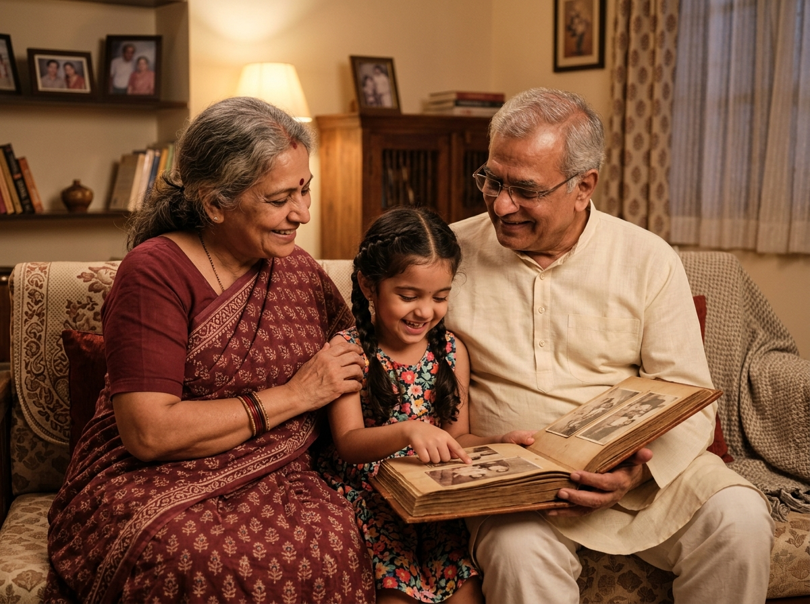

Good morning,
Friend
It never says
“failed”.
Feedback is “Wonderful Effort!”
The elder's app
What would you like to do?
DAILY
Memory
Games
ROUTINES
My
Reminders
MEMORIES
Family
Photos
TALK
Ask
NIRVANA
Large touch targets · calm, familiar layout
Cognitive games
Daily Activities
☀️
Welcome to Today's Fun!
🍎
Remember
Objects
Find items on the shelf
👵
Who Is
This?
Recognize family faces
🛒
Grocery
Memory
Remember the shopping list
🧩
Jigsaw
Complete the picture
Engagement activities — never a clinical test
Grocery Memory
Find these on the shelf:
Rice
Tea
Milk
Onion
Tomato
Tea
Potato
Carrot
Apple
Wonderful Effort!
No timers. No “wrong”.
Jigsaw · familiar places
Pictures from home
Scenes from the North East of India — pictures to piece together
Kaziranga Rhino
Tawang Monastery
Seven Sisters
Cherrapunji Falls
Reminders
A gentle nudge, on time.
Medicines
Every day · 8:00 AM
OFFLINE
Done
Snooze 15 min
Later today
Scheduled on-device — accurate even when the phone is asleep
Who Is This?
Familiar faces
The elder's own family and everyday objects — not generic drills
FAMILY
Granddaughter
“She brings a bright new generation of memories and loves painting!”

Family Photos album
🎙️
Voice-assisted — tap to hear
Offline-first by design
The elder never waits
on the network.
Hive — local, on-device
Single source of truth
Sync queue — idempotent events
UUID events replay when the network returns
Supabase — PostgreSQL + RLS
Role-separated patient / caregiver data
Caregiver dashboard
Visibility, not surveillance
Caregiver Dashboard
SYNC HEALTHY
12
Games
completed
5/6
Reminder
completion
17
Activities
completed
7-Day Activity View
Participation, not a clinical assessment
I'm Lost / I Need Help
One tap shares a live location with the caregiver.
NIRVANA
Calm technology for the people
who raised us.